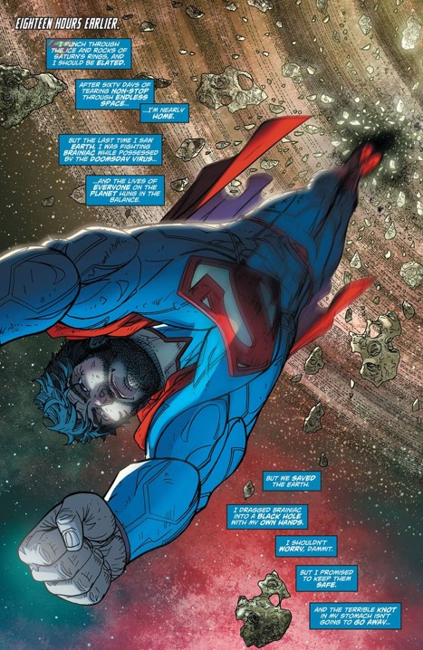
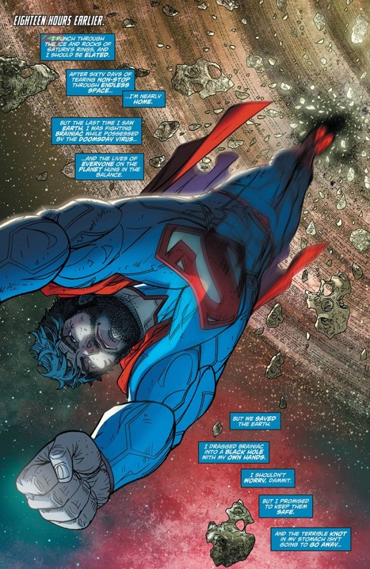

The Paradox
The Black Hole Information Paradox is the paradox of what happens to the information sucked in by a black hole. using genreral relatvity we know that nothing can escape a black hole's event horizon. So when the black hole emits enough raidation to eventually disappear, the information inside of it goes along with it.
This contridicts quantum mechanics as this states that information in the universe can changes forms but it cannot be destroyed.
This is a paradox as the information that is trapped in the black hole as it shrinks it stuck there. As stated above this cannot happen as the information inside of the black hole has to find a way to escape it. The paradox and war of theories has been going on since the 70's but there have been some solutions that may work. The main solutions are the Hologrpahic Priniciple and that the Black Holes have soft hair.
- Honestly just watch Rick and Morty, that's where I learned all of this from (Mr. Manning please understand that this was only a terrible joke and does not refelct on how I conducted my research).
 
